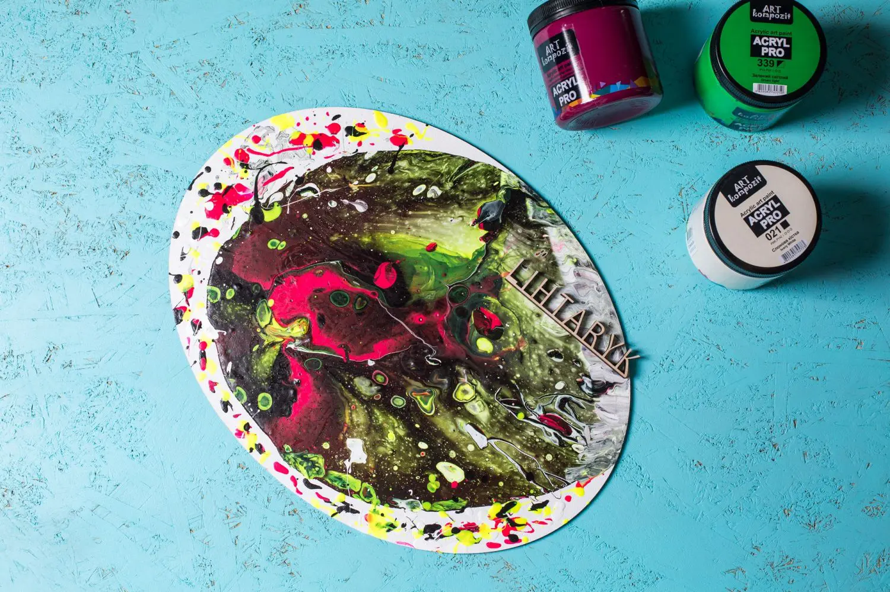

Акрил — это
техника живописи и разновидность красок, в которых используются особые термопластичные полимеры —
полиакрилаты.овые краски также широко используются в строительстве при выполнении отделочных работ.
Акрил относительно недавно появился в творческом арсенале художников и очень быстро составил конкуренцию
традиционным масляным и акварельными красками. Его история берет начало с открытия в конце 20-х годов прошлого
века немецким химиком Отто Ремом полиметилакрилата — прочного прозрачного пластика, известного под названием
оргстекло. В 1933 году Рем изобрел способ разведения твердых полимерных смол растворителями, и именно это
привело к появлению первых акриловых красок.
В середине 30-х годов американцы Леонард Бокур и Сэм Голден создали компанию по производству художественных
материалов. Сначала они занимались изготовлением традиционных масляных красок, и позже заинтересовались
полимерными красителями. В 1947 году они изобрели первый художественный акрил Magna paint, изготовленный на
основе органического растворителя — скипидара. Через 13 лет им удалось разработать акриловые краски на водной
основе, которые поступили в продажу под маркой Aquatec. С тех пор у живописцев появился новый материал для
творчества.
Преимущества акрила оценили представители различных направлений искусства: поп-арта, абстракционизма,
гиперреализма, ар-деко, постмодернизма и др. Техника акриловой живописи прекрасно подходит для написания
оригинальных ярких картин. С 60-х годов прошлого века и до сегодняшнего времени акрил является одной из
основных техник в современной живописи.
Преимущества и недостатки акрила
Преимуществами акриловых красок являются:
- Высокая скорость высыхания — вода в составе краски быстро испаряется, оставляя на поверхности
полотна цветную пленку.
- Просто
- Просто
- Просто
- Просто
- Эластичность — акриловая краска со временем не покрывается трещинами.
- Отсутствие токсичных компонентов — акриловые краски абсолютно безопасны для человека и окружающей среды.
- Многообразие цветов — современные производители предлагают широкий выбор оттенков на любой вкус.
- Влагостойкость — после высыхания акрил невозможно смыть с поверхности водой, только с помощью специального растворителя.
Кроме того, акриловые краски прекрасно смешиваются, и можно получить множество оттенков из базовых цветов. Их можно использовать в смешанных техниках, создавать различные текстуры, регулируя количество воды.
Среди недостатков акрила является то, что нанесенная на грунт краска со временем немного темнеет, а из-за
быстрого
высыхания иногда художнику бывает достаточно сложно внести коррективы в работу и исправить ошибки.
И через большое количество преимуществ акриловые краски по достоинству оценены художниками и приобрели
популярность на мастер-классах в арт-студии «Лихтарик». С их помощью можно создавать неповторимые абстрактные
картины в технике Fluid art.
Fluid art – это техника абстрактного искусства, в которой используются акриловые краски в жидком
виде.
Это увлекательный и довольно простой способ создания уникальных картин. Акриловые краски, предварительно
разбавленные жидким медиумом, взаимодействуют друг с другом, создавая интересные и визуально органические
мотивы.
Когда появилась техника жидкого акрила?
Несмотря на то, что популярность fluid art возросла довольно недавно, первые эксперименты в технике жидкого акрила проводились еще с 1930-х годов. Так, мексиканский художник Давид Альфаро Сикейрос неожиданно обнаружил необычные эффекты при взаимодействии текучих красок друг с другом и назвал полученный результат «случайной живописью». Сикейросу очень понравилась эстетика такой живописи, он видел в работах синергию между наукой и искусством, сложностью и красотой. Увлечение эффектами жидких красок привело его к познанию науки о гидродинамике. Техника случайной живописи стала основой в работах многих известных художников. Вдохновленный Сиккеросом, Джексон Поллок, в свое время решивший, что для написания картин не обязательно использовать привычные техники, стал одним из самых ярких представителей экспрессионизма. По его мнению, с помощью абстракции можно выразить гораздо большее количество идей. Для знаменитой «капельной» живописи Поллока акриловые краски подошли идеально. Он активно использовал излюбленную технику при создании своих масштабных абстрактных работ. Используя акриловые краски, сторонники абстрактного экспрессионизма в своих работах полностью полагались на бессознательное, свободное от законов логики и контроля ума творчество, полностью отказавшись от изображения объектов реального мира. Техника fluid art отлично подходит для изображения космических мотивов. Ведь сочетания и переливы красок позволяют создать картины, похожие на фотографии из космоса. Такие работы привлекают внимание. На мастер-классе по жидкому акрилу мастер арт-студии «Лихтарик» поможет подобрать необходимые оттенки для создания фона при изображении космоса и правильно разместить их на холсте. На завершающем этапе следует нарисовать звезды и участки молочного пути. Результат Вам обязательно понравится. Текстильные акриловые краски используются на мастер-классе по росписи сумок или футболок. Работа с акрилом не требует творческого опыта, а результат захватывает и вдохновляет!